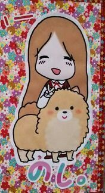
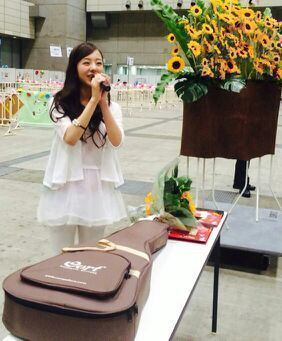

| 2014/07 23 Wed | 〜19歳の誕生日〜 まにorろってぃ−( ^-^)ノ ∠※。.:*:・'°☆ |
こんにちわ\(・ω・)/ ろってぃ−です ..*
私、今日 7/23で19歳のお誕生日をむかえました！
パチパチパチパチ......... ))))))))))))
そして2日前の握手会の時に
ファンの皆さんが生誕祭を開いてくれました..*
本当に本当に 嬉しかったです！
ろってぃ−＝サスケ＝向日葵とゆうイメージを皆さん持ってくださっていて、握手をしてる時、周りにたくさんの向日葵が用意されてありました..*
風船で作った向日葵を壁にいっぱい貼って、
後ろには本物の向日葵がいっぱいあって、、、
そしてこれ \☆/わら

可愛い過ぎでしょ？
笑ってる自分 と サスケ..*
サスケも一緒におることが何より嬉しいです.♪
サスケもこもこや〜〜
生誕祭の時に、皆さんの方から『サスケ歌って〜サスケ歌って〜』って声が聞こえてきて、1サビだけ歌わせて頂きました。
緊張して、ブレス入れるの忘れたりしました。笑
でも最後まで皆さんが静かに聞いてくださっていたので、本当に嬉しゅうキモチでしたよ.♪わら
本当にありがとうございます。
スピーチでも言いましたが、こんな普通の一人の人間が、こんなにもあたたくて優しい沢山の方に、誕生日を祝ってもらえること、本当にありがたく思っております。
こんな幸せな誕生日はないです\*´`*/
本当に 伝えたいことがありすぎて、
スピーチの時間少ないよ〜(><) って内心思ってました

素敵なプレゼントも 頂きました...。

↑↑↑ あっ、私服これ、、、わら
(中にうすピンクのインナーきてます.差し色..*)
10代もこれで終わりか...
安室奈美恵さんのSWEET 19 BLUESを同じ19歳で歌える時がやってきた..*
夢に向かって頑張るか...... 。
のし。まに
コメント(492)
2014/07/23 16:30